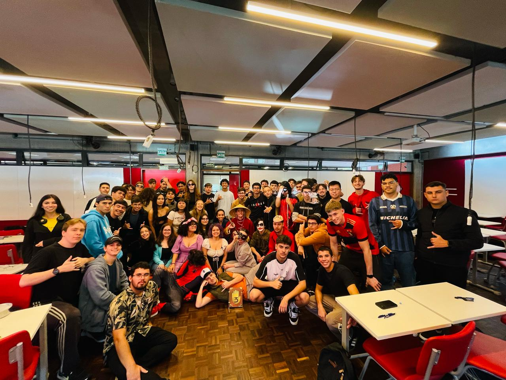
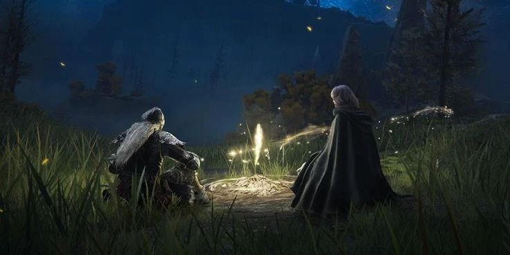

Olá! Me chamo Gustavo Fagundes de Amorim e sou estudante de Ciência da Computação. Minha trajetória começou em São Paulo, onde vivi boa parte da minha vida.
Me mudei para Curitiba com o objetivo de estudar Ciência da Computação e viver novas experiências. Tem sido um ano incrível, cheio de aprendizado, boas notas e muitas amizades.
Essa decisão está mudando minha vida, me trazendo crescimento tanto pessoal quanto profissional.
Pretendo criar um site de vendas para aplicar meus conhecimentos e também começar o desenvolvimento de um jogo estilo RPG em pixel, unindo programação e criatividade.
Esses são os primeiros passos de uma jornada que só está começando.
